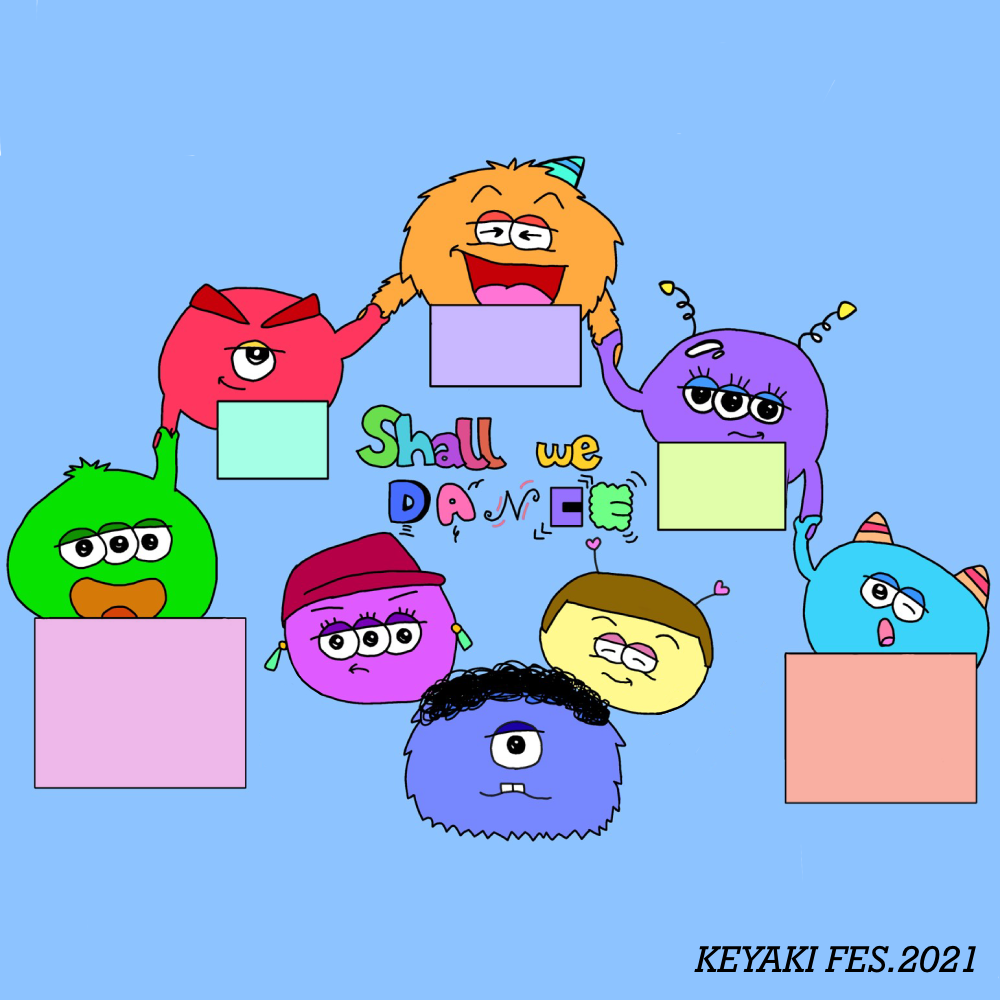
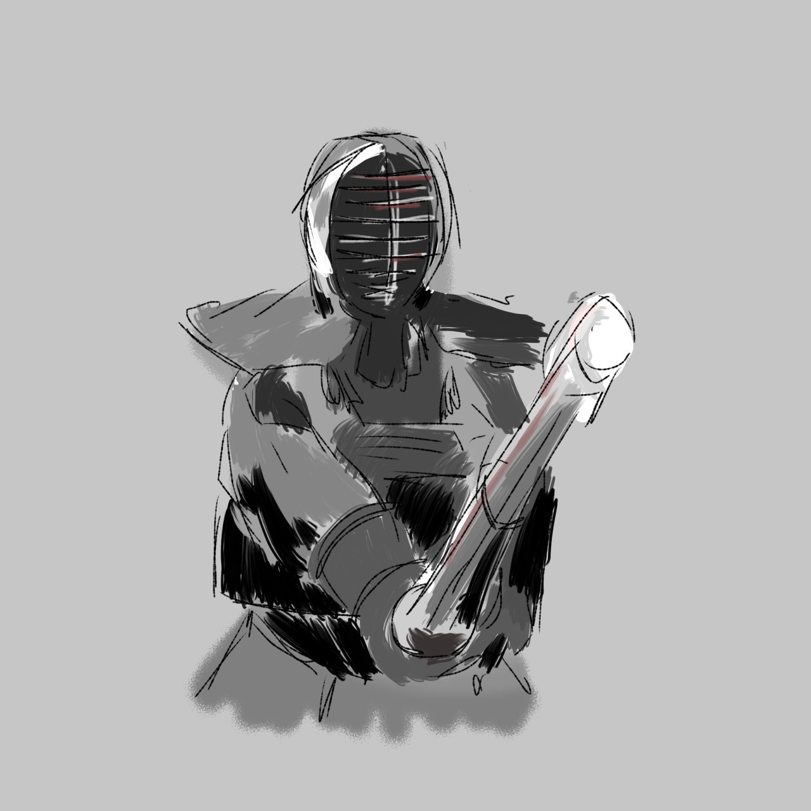
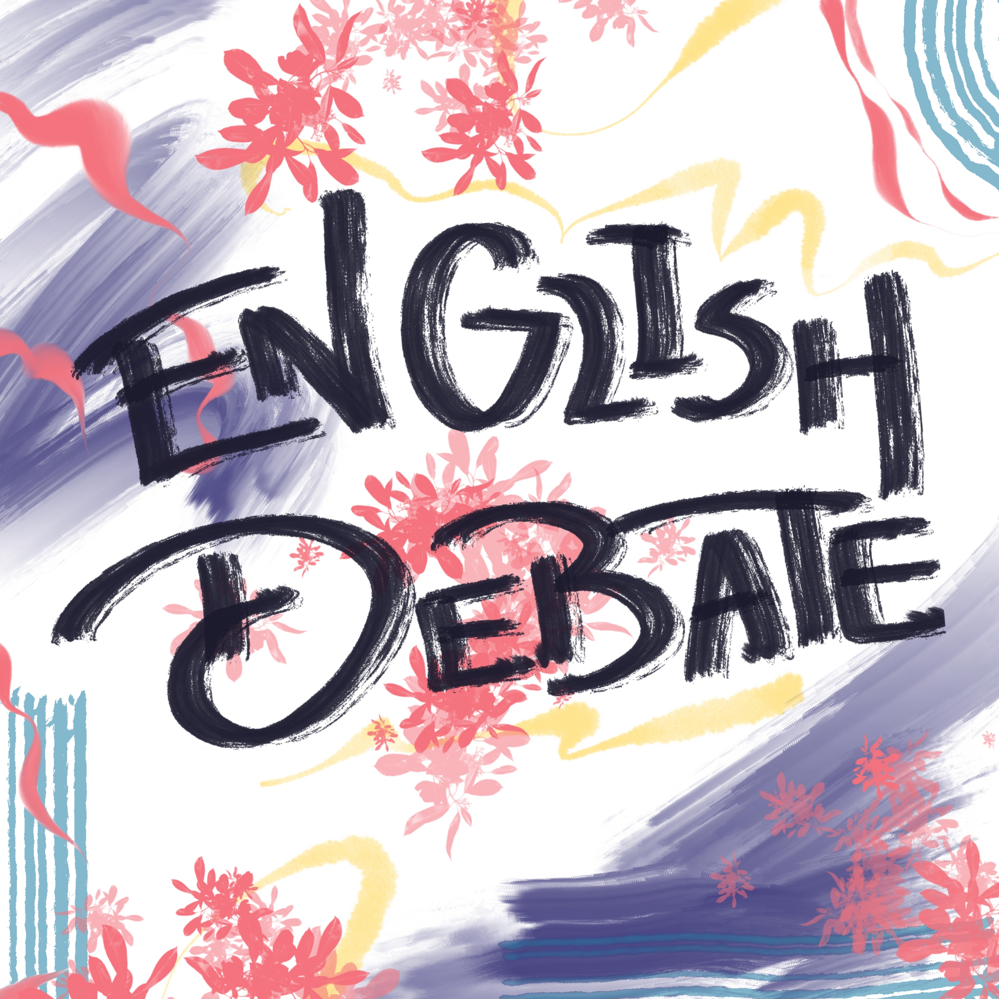
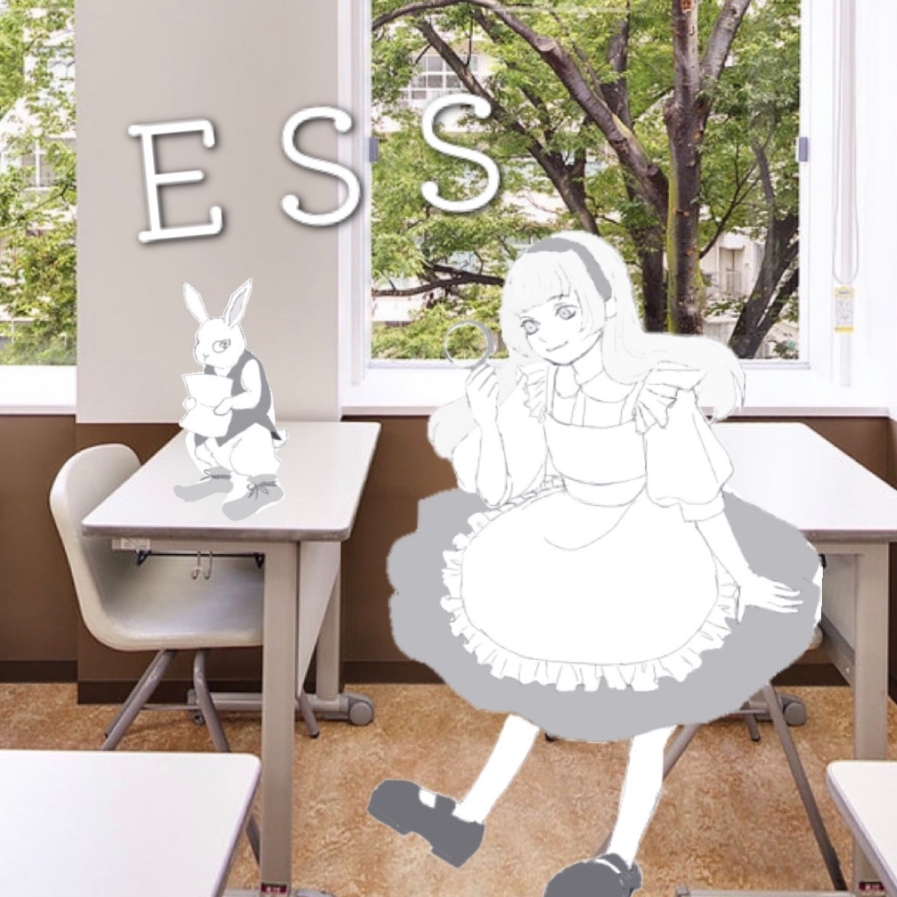
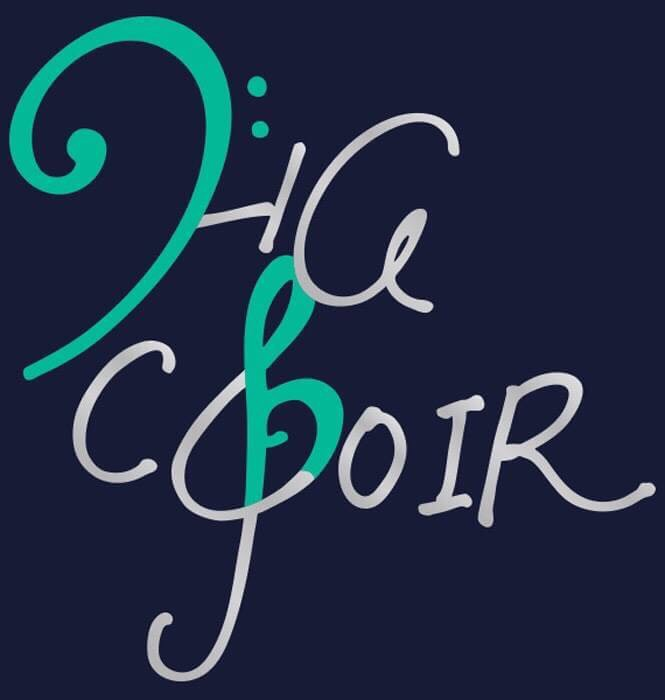
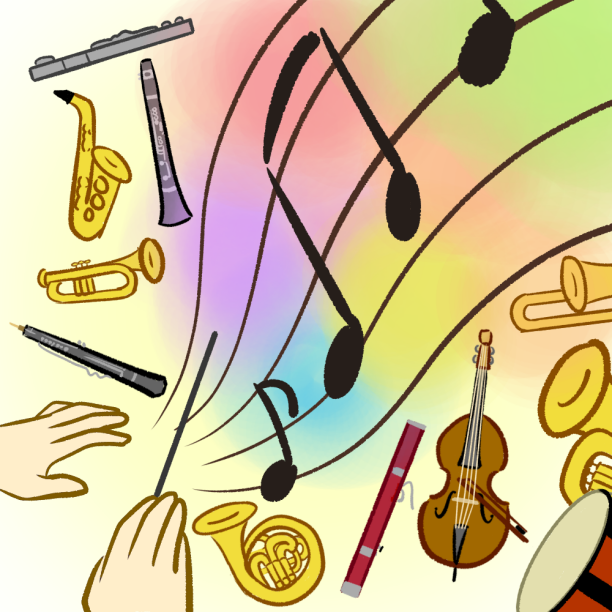
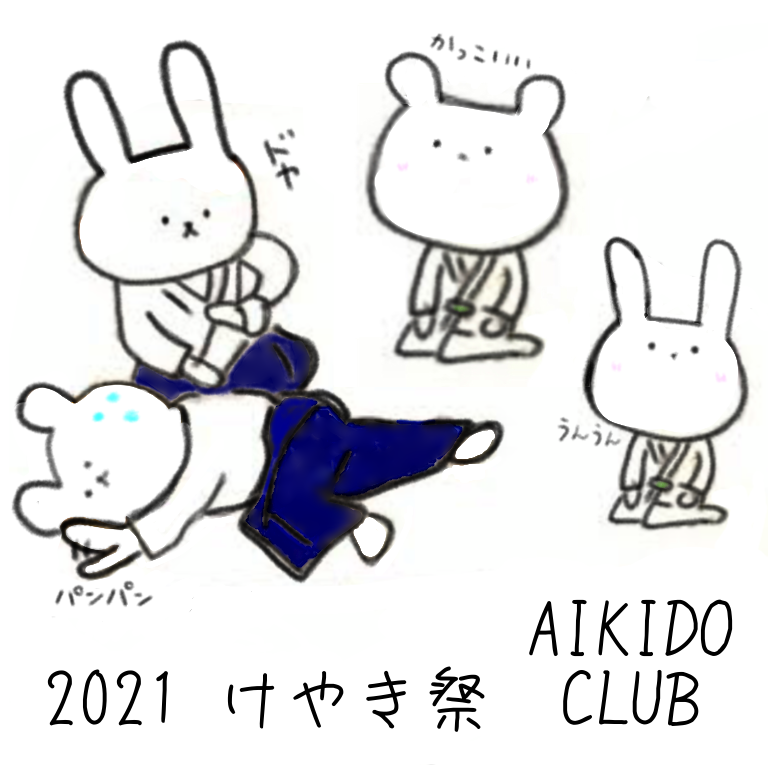
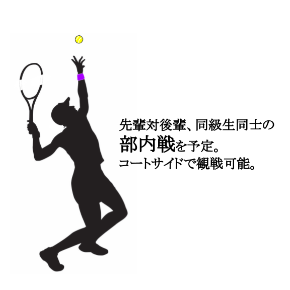
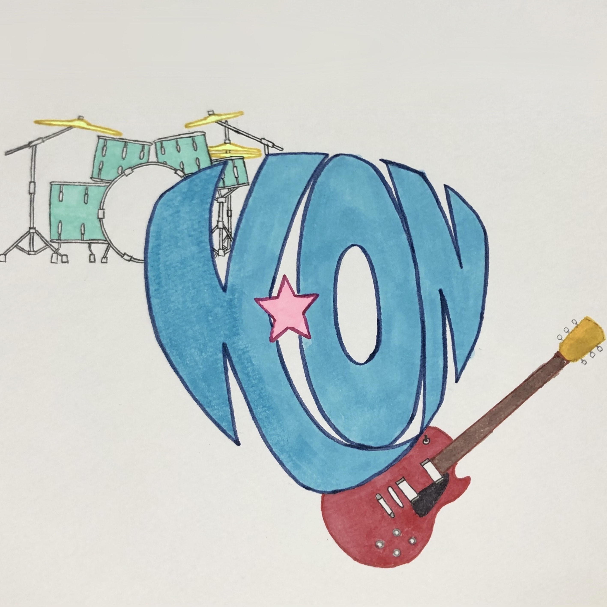
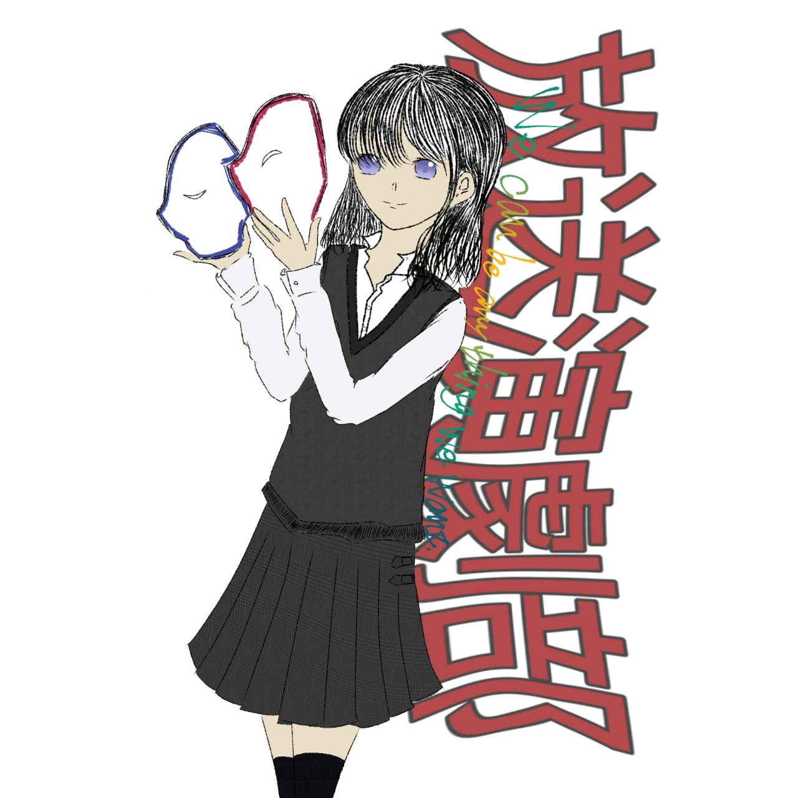

チアリーディング部-Cheerleading Department
チアリーディング部THUNDERSです！
元気・勇気・笑顔をお届けします！
迫力ある演技をご覧ください！
詳しく見る→
ダンス部-Dance Club
日頃の練習成果を詰め込んで作り上げる、最高の舞台を皆様にお届けします！是非ご覧ください！

詳しく見る→
新体操部-Rhythmic gymnastics Club
コロナが収束した未来を願い「再興」をテーマに踊ります。部員の美しくも
力強い演技をぜひご覧下さい！
詳しく見る→
剣道部-Kendo Club
剣道部の様子を撮影した動画を作成しました。部内の雰囲気がよく伝わると思います。ぜひご覧ください！

詳しく見る→
ディベート部-Debate department
観客参加型の簡易ディベートをやってます！部員vs部員、部員vs観客で暑い論争を繰り広げましょう！
詳しく見る→
英語ディベート部-English debate Club
Welcome to English Debate Club! Consisting of students from M1 to H3, all the members have a close and
casual relationship, helping to foster each other’s debating skills. Recently, we’ve been expanding our
participation in international debating competitions!

詳しく見る→
英会話部-English conversation
ESSでは英語を使った謎解きを行います。難易度別にコースを用意しているのでぜひ遊びに来てください！

詳しく見る→
模擬国連同好会-Model United Nations Club
This year, the HG Model United Nations Club will be holding a conference on “Health Security”. Students will be discussing how to ensure health security amid the ongoing COVID-19 pandemic; please join us for a heated and fruitful conference!
詳しく見る→
ICTルーム-ICTRoom
3Dプリンターやレーザーカッターの
展示、実演を行っています！
最新機器をぜひご覧ください！
詳しく見る→
合唱部-Chorus
合唱部では中高40人ほどの｢ウタバカ(響命)｣な部員が、自分たちの考える音楽を求め楽しく活動しています♪

詳しく見る→
吹奏楽部-Brass band Club
限られた時間の中で練習の仕方を工夫し、成長した姿をお見せします！
私たちの公演にぜひお越しください！

詳しく見る→
合気道部-Aikido Club
合気道部は総勢12名で、けやき祭に向けて部員一同一生懸命練習してきました！私たちの演武会を是非ご覧下さい！

詳しく見る→
男子テニス部-Boy's tennis club
中高男子テニス部です！週３で楽しく
テニスをしています！うるささと楽しい雰囲気が売りです!

詳しく見る→
茶道部-Tea ceremony club
茶道部は毎週2日主にお点前の練習をしています。作法を通して学年を超えた交流ができる楽しい部活です。
詳しく見る→
軽音楽部-light music club
｢好きな曲を演奏する｣をモットーに活動しています。沢山のジャンル、バンド形態の音楽をお楽しみ下さい!

詳しく見る→
放送演劇部-Broadcast drama club
『伝えることを楽しむ』をモットーに、演劇、映像、朗読の3つの部門に分かれ、協力し合い活動しています！

詳しく見る→